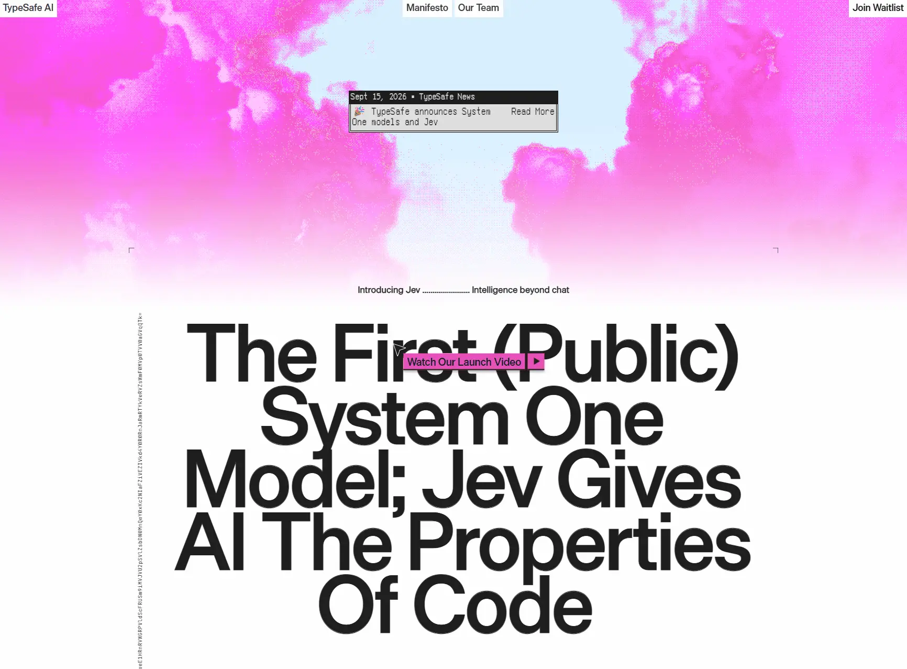

Сайт 006 · Многостраничный · Сервисы и приложения
TypeSafe AI
18 место в чемпионате · 75.1 / 100
Screens/006.webp, доминирующий цвет занимает 55% кадра.Что это
Сайт лаборатории, которая делает ИИ-модели для машинного, а не человеческого применения: главная продаёт первый публичный «System One Model» по имени Jev, отдающий типизированные решения с калиброванными вероятностями для кода, а не текст для чата. Собран и опубликован целиком в Framer: статический пре-рендер, кастомные шрифты Die Grotesk C и LisaTerminal, аналитика PostHog через собственный поддомен. Визуально это чёрно-белая редакционная вёрстка с гигантским заголовком и одним полноэкранным розово-магентовым облаком, а новостной баннер оформлен как окно классической Mac OS.
Описание владельца коллекции: Стильный сайт лаборатории, которая создаёт ИИ-модели не для людей, а для автономного принятия решений внутри софта. Об их первом релизе читайте в рубрике «Нейро».
Чем интересен
- Новостной баннер сделан как окно классической Mac OS — с тёмной строкой заголовка и пиксельным моноширинным шрифтом LisaTerminal, названным в честь терминала Apple Lisa.
- На главной живут маленькие настольные игрушки — «Clock Tool 1.1», «Glider 1.1», «Game of Life» — и идущие часы с датой, продолжая ту же метафору рабочего стола.
- Часть текста выложена видимым base64: строка «VHlwZVNhZmUgQUkgSW50ZWxsaWdlZW5jZSBOb3c=» расшифровывается как «TypeSafe AI Intelligence Now», а рядом лежит base64 функции быстрого обратного квадратного корня из Quake III.
- Аналитика PostHog подключена не с posthog.com, а через собственный поддомен r.typesafe.ai — приём обхода блокировщиков; других счётчиков и тег-менеджеров нет.
- Весь контент сайта отдаётся ещё и как JSON: индекс поиска Framer содержит заголовки и тексты всех 14 страниц и доступен напрямую.
- Заголовок, который занимает весь первый экран, не находится в этом индексе — похоже, он отрисован как графика или SVG, а не набран живым текстом.
Все 30 номинаций сайта
Итог: 75.1 / 100 по профилю «Сервис, банк, образование». Первых мест в критериях: 3 (единолично 0, разделено 3), призовых мест: 5. Строки отсортированы по месту в номинации, ссылка ведёт к номинации в чемпионате.
- Соответствие бренду и ЦА
- Актуальность
- Безопасность
- Стабильность
- Прозрачность
- Эстетика и оригинальность
- Уникальность предложения
- Удобство интерфейса
- Инновационность в дизайне
- Работа форм и поиска
- Релевантность и полнота
- SEO-оптимизация
- Креативность в решении задач
- Уникальность и экспертность
- Грамотность
- Социальная ответственность
- Отзывы и рейтинги
- Интуитивность навигации
- Экспертность
- Соответствие заявленному
- Читабельность
- Полнота реализации
- Интеграции
- Современные технологии
- Доступность (a11y)
- Целостность
- Интерактивные элементы
- Попадание в номинацию
- Мультимедийность
- Адаптивность
Обоснования по разделам
- Юзабилити и UX
- Навигация короткая и понятная — манифест, команда, ожидание доступа; из минусов: viewport без initial-scale, а заголовок первого экрана, похоже, отрисован графикой, поэтому его нельзя выделить и он не виден поиску.
- Дизайн и визуальное восприятие
- Сильная редакционная подача: почти белое поле, чёрная типографика, одно розово-магентовое облако на весь экран, инвертированная плашка на слове и служебные литеры по краям.
- Контент
- Манифест, блог с релизным постом, страница команды, сравнение стоимости и девять вопросов FAQ с ответами; отзывов и клиентов нет — продукт в раннем доступе.
- Техническое качество
- HTTPS с HSTS, robots и sitemap на 14 адресов, og-теги, 17 проверенных ссылок без единой битой; микроразметка не найдена, description длиной 190 символов длинноват.
- Функциональность и интерактивность
- Живой формы регистрации в ожидании и контакта с продажами в доступной части не видно, зато есть настольные игрушки, часы и drag-курсоры.
- Доверие и репутация
- Пять юридических документов с датами, название юрлица TypeSafe AI, Inc. и почта для связи; отзывов и подтверждённых клиентов нет.
- Инновации и технологичность
- Статический пре-рендер Framer, аналитика через собственный поддомен вместо чужого домена и машиночитаемый индекс всего контента — приёмы осознанные и редкие.
- Соответствие категории и целям
- Для сайта исследовательской лаборатории закрыто главное: что делают, чем отличается, сколько стоит и как начать; нет только подтверждений от пользователей.
Что не проверено
- Полный HTML главной страницы получить не удалось: Framer обрывает передачу не-браузерным клиентам примерно на 21 КБ из 82 КБ — проверено множеством способов, при этом контрольные загрузки с других доменов проходят мгновенно. Разобраны только заголовки ответа, начало документа и инлайновые стили.
- Что именно на первом экране — картинка, видео, canvas или градиент — установить не удалось: разметки тела нет, а заголовок из скриншота отсутствует в текстовом индексе сайта.
- Кастомный курсор, звук и скролл-эффекты не подтверждены: в доступной части найдены только служебные правила Framer.
- Микроразметка проверена лишь частично — начало документа получено не целиком, поэтому JSON-LD в теле страницы не исключён.
- Вес страницы, число запросов и скорость загрузки не измерялись: полная загрузка документа невозможна.
- Адрес офиса, регистрационный номер и телефон не найдены — это отсутствие данных в доступных источниках, а не доказательство отсутствия на сайте.
- Вертикальная полоса микротекста в левом поле содержит многослойный base64, но строка уходит за края скриншота — итоговое содержимое не установлено.
Паспорт
- Домен
- typesafe.ai
- Тип сайта
- Многостраничный
- Категории
- Сервисы и приложения
- Подкатегории
- AI-сервисы
- Для кого
- Разработчикам, Продуктовым командам, Дизайнерам
- Стиль
- Швейцарская типографика, Брутализм, Редакционный
- Приёмы
- Генеративная графика, Drag-взаимодействие, Микроанимации
- Технологии
- Framer, Framer Cloud, статический пре-рендер, PostHog с собственным прокси, Кастомные шрифты Die Grotesk C и LisaTerminal, Google Fonts, Машиночитаемый индекс контента
- Язык
- Английский
- Страна
- США — офис в Сан-Франциско у Embarcadero (по странице команды), в подвале «Made in SF. With Love.»
- Автор
- TypeSafe AI, Inc. — сделано внутри компании; внешняя студия нигде не указана
- Год
- 2026
- Добавлен
- 2026-09-30
Палитра
- #FDFBFE — 55% кадра
- #FC6EEB — 19% кадра
- #1F1F1F — 8% кадра
- #FBB4F1 — 8% кадра
- #D9EEFE — 5% кадра
измерено из Screens/006.webp (почти белый фон занимает 55% кадра, магента 19%); брендовые значения подтверждены CSS сайта: #fefefe, #000000, #1e1e1e, #f386a1, #d45bb6, #03aa5c
- Режим
- Светлая
- Цвет фона
- Нейтральный
Чемпионат
18 место из 31 · 75.1 / 100 · первых мест 3 из 30 · сильнее всего: Соответствие бренду и ЦА (1 место)
- Соответствие бренду и ЦА — 1 место, 9 баллов
- Актуальность — 1 место, 9 баллов
- Безопасность — 1 место, 8 баллов
Технические факты
- HTTPS
- да
- Meta viewport
- да
- Title
- Home - TypeSafe AI (18 симв.)
- Description
- TypeSafe AI is an AI lab building machine-native intelligence infrastructure for automation, designed to make decisions within software. Try our first System One Model, Jev, in early access. (190 симв.)
- Open Graph
- да
- Структурированные данные
- нет
- Sitemap
- https://typesafe.ai/sitemap.xml — 14 адресов
- Robots
- есть: Allow: / и ссылка на sitemap
- Аналитика
- PostHog через собственный поддомен r.typesafe.ai
- Проверено ссылок
- 17
- Битые ссылки
- нет
- Контакты
- hello@typesafe.ai, ссылки на LinkedIn и X; телефон и форма обратной связи не найдены
- Юридическая информация
- TypeSafe AI, Inc.; пять документов: Terms of Use (19.09.2026), Privacy Policy, Acceptable Use Policy (23.09.2026), Master Customer Agreement и Data Processing Addendum; регистрационных данных и адреса нет
Технологии с доказательствами
- Framer — комментарий «Made in Framer», meta generator Framer a56d1fd, заголовок Server: Framer/26fa766, Framer-Site-Id, 150 атрибутов data-framer-component-type
- Framer Cloud, статический пре-рендер — заголовки Server-Timing с ssg-status=optimized, Strict-Transport-Security max-age=31536000, Alt-Svc h3
- PostHog с собственным прокси — инлайн posthog.init('phc_…', { api_host: 'https://r.typesafe.ai', ui_host: 'https://us.posthog.com' })
- Кастомные шрифты Die Grotesk C и LisaTerminal — @font-face с framerusercontent.com/assets: Die Grotesk C Medium/Regular и LisaTerminal Paper 2X3Y Medium
- Google Fonts — preconnect на fonts.gstatic.com и @font-face для JetBrains Mono (300) и Fragment Mono (400)
- Машиночитаемый индекс контента — meta framer-search-index → searchIndex-*.json, 43 811 байт, содержит заголовки и тексты всех 14 страниц
Что смотреть в первую очередь
Смотреть как пример редакционной подачи технического продукта: гигантский заголовок с инвертированной плашкой, служебные литеры и base64 прямо в тексте, новостной баннер как окно классической Mac OS.
Похожие в коллекции
- The Content Architecture — общее: Сервисы и приложения, Брутализм, Швейцарская типографика, Микроанимации
- Joshua Baker — общее: Редакционный, Микроанимации, Drag-взаимодействие
- Dia — общее: Сервисы и приложения, Редакционный, Микроанимации
- Flect — общее: Редакционный, Микроанимации, Генеративная графика